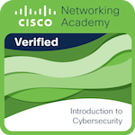
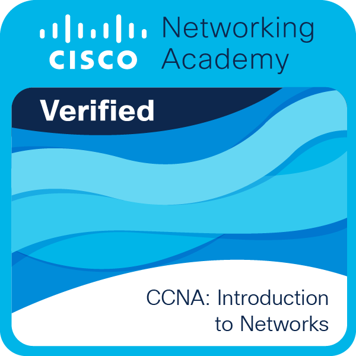

Étudiant BUT R&T · Alternant Orange · Cybersécurité
Je suis en 2ᵉ année de BUT R&T à l'IUT de Blois, en alternance chez Orange. Ce qui me motive, c'est de comprendre tout ce qui m'entoure au quotidien — que ce soit les démarches administratives, les réactions humaines ou des choses plus complexes comme la composition de la chaussée.
Je m'appelle Naïm, j'ai 20 ans et je suis en BUT Réseaux & Télécoms à l'IUT de Blois. Ce qui me motive c'est de comprendre comment les choses fonctionnent, comprendre pourquoi et comment ça marche ou pas. Si je rencontre un problème dans la vie de tous les jours, je vais essayer de le comprendre afin de le résoudre.
Grâce à ma première vraie expérience professionnelle chez Orange, j'ai pu être confronté au monde du travail. Je trouve cette expérience très enrichissante pour comprendre comment fonctionne une grande entreprise, aussi bien techniquement avec son infrastructure qu'humainement avec ses employés ou ses clients. Si je devais retenir une chose importante de cette expérience, ce serait qu'il est essentiel d'entretenir une bonne relation avec ses collègues, que ce soit au niveau personnel ou professionnel, car ce sont les personnes avec lesquelles on passe le plus de temps.
En dehors de ça, pendant mon temps personnel, j'essaie de faire des activités enrichissantes comme faire des sorties avec des amis pour découvrir de nouvelles choses ou me détendre avec mes passions. Je trouve qu'il est important d'entretenir des relations sociales pour s'enrichir intellectuellement mais aussi pour relâcher la pression. Un autre moyen d'y parvenir est de m'échapper dans l'univers des jeux vidéo, des films et séries, ou encore en écoutant de la musique.
En tant que chargé d'affaires, je réalise des projets de modification du réseau Orange côté OI (Opérateur d'Infrastructure) afin de résoudre des problématiques avec des solutions techniquement réalisables et avec un coût le plus avantageux possible pour Orange — ce sont des solutions technico-économiques.
En intégrant l'IUT de Blois dans la filière R&T, j'apprends à développer certaines compétences techniques, que ce soit en réseaux, en codage ou en sécurité informatique. Cependant, cette formation nous apprend quelque chose de plus important : la recherche et la curiosité, le fait de vouloir tout comprendre et de savoir où chercher les informations.
Bac obtenu avec mention assez bien. Spécialités maths, physique-chimie et NSI, avec l'option maths expertes. C'est durant ces trois années de lycée que j'ai compris l'importance et l'intérêt de l'apprentissage — je me suis donc mis à réellement aimer les cours.
Le but de ce projet était d'avoir une première approche de la sécurité informatique et de sensibiliser d'autres personnes à ce que l'on a appris. Pour cela, il a fallu vulgariser les différents termes et mettre en place une stratégie de sensibilisation autour des risques numériques : phishing, mots de passe, chiffrement. Basé sur les recommandations de l'ANSSI.
Conception complète d'une infra PME sous Cisco : VLANs, ACLs, DMZ, NAT/PAT et double stack IPv4/IPv6 avec un FAI simulé. Un projet qui m'a beaucoup appris sur la segmentation réseau.
Création d'une application de messagerie en Java, de A à Z (par groupe de trois) : sockets TCP, multithreading, interface Swing, base de données MariaDB et quelques mécanismes de sécurité comme le hachage des mots de passe. Ce projet m'a permis de voir comment s'organiser et se coordonner avec ses camarades sur quelque chose d'assez complexe à réaliser en peu de temps.
J'ai codé un outil de chiffrement XOR par curiosité, pour comprendre vraiment comment ça marche plutôt que juste l'utiliser. Site internet en ligne pour essayer le programme.
Ce sont les sports que je préfère. Je ne pratique plus l'escalade de manière régulière, mais je fais au maximum pour faire des activités de ce type, notamment lors de mes vacances. Ces sports, qui ne sont pas si communs, m'apprennent à garder mon calme dans certaines situations et me permettent de décompresser pendant mes congés.
J'écoute souvent de la musique quand je travaille seul. Ça m'aide à rester concentré, surtout sur les tâches longues. Le genre varie selon ce que je fais.
Dead by Daylight, Resident Evil, Minecraft. Solo ou avec des amis selon l'humeur. Et pour le cinéma, j'ai un faible pour les thrillers bien écrits, comme la saga Saw.
Formation en ligne de l'ANSSI sur les bases de la sécurité numérique. Quatre modules, attestation obtenue en 2025.
Une intro aux bases de la sécurité réseau — attaques courantes, bonnes pratiques de défense et premiers réflexes.

Premier cours de la filière CCNA — les fondamentaux du réseau, des modèles OSI/TCP-IP aux premières configs Cisco.

Je fais régulièrement des cours ou des entrainement en autonomie pour en apprendre plus sur les différents domaines de la cybersécurité.
Pix est une certification mise en place par l'État afin d'acquérir des compétences de base en informatique. Lors de ma dernière certification, j'ai certifié 627 points sur les 705 que j'avais atteints lors des entraînements Pix.
Proposition de stage, question technique ou juste envie d'échanger.